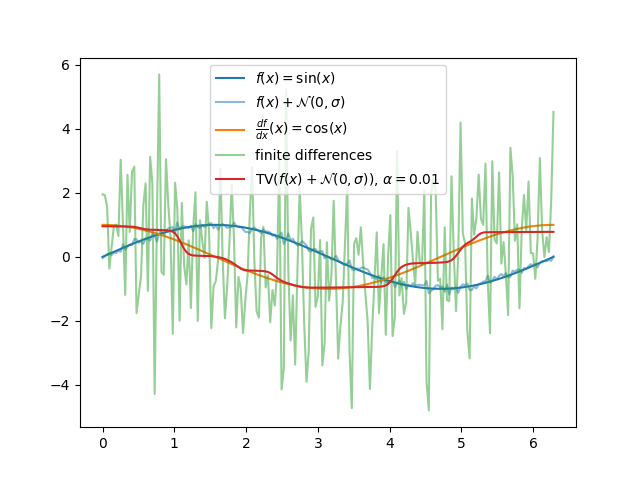

Note
Click here to download the full example code
TV Derivative¶
Total-variation regularized derivative on a noisy function.
iteration 1: relative change = 1.540e+00, gradient norm = 2.712e+01
iteration 2: relative change = 5.539e-03, gradient norm = 2.174e+00
iteration 3: relative change = 1.998e-03, gradient norm = 1.215e+00
iteration 4: relative change = 8.794e-04, gradient norm = 8.599e-01
iteration 5: relative change = 4.472e-04, gradient norm = 6.112e-01
iteration 6: relative change = 2.633e-04, gradient norm = 4.464e-01
iteration 7: relative change = 1.772e-04, gradient norm = 3.312e-01
iteration 8: relative change = 1.320e-04, gradient norm = 2.575e-01
iteration 9: relative change = 1.046e-04, gradient norm = 2.081e-01
iteration 10: relative change = 8.573e-05, gradient norm = 1.719e-01
iteration 11: relative change = 7.162e-05, gradient norm = 1.444e-01
iteration 12: relative change = 6.051e-05, gradient norm = 1.229e-01
iteration 13: relative change = 5.147e-05, gradient norm = 1.060e-01
iteration 14: relative change = 4.397e-05, gradient norm = 9.257e-02
iteration 15: relative change = 3.766e-05, gradient norm = 8.181e-02
iteration 16: relative change = 3.228e-05, gradient norm = 7.311e-02
iteration 17: relative change = 2.767e-05, gradient norm = 6.602e-02
iteration 18: relative change = 2.370e-05, gradient norm = 6.017e-02
iteration 19: relative change = 2.025e-05, gradient norm = 5.528e-02
iteration 20: relative change = 1.724e-05, gradient norm = 5.115e-02
iteration 21: relative change = 1.461e-05, gradient norm = 4.762e-02
iteration 22: relative change = 1.231e-05, gradient norm = 4.458e-02
iteration 23: relative change = 1.029e-05, gradient norm = 4.192e-02
iteration 24: relative change = 8.509e-06, gradient norm = 3.957e-02
8 import numpy as np
9 import deeptime.util.diff as diff
10 import matplotlib.pyplot as plt
11
12 noise_variance = .08 * .08
13 x0 = np.linspace(0, 2.0 * np.pi, 200)
14 testf = np.sin(x0) + np.random.normal(0.0, np.sqrt(noise_variance), x0.shape)
15 true_deriv = np.cos(x0)
16 df_tv = diff.tv_derivative(x0, testf, alpha=0.01, tol=1e-5, verbose=True, fd_window_radius=5)
17
18 plt.figure()
19 plt.plot(x0, np.sin(x0), label=r'$f(x) = \sin(x)$')
20 plt.plot(x0, testf, label=r'$f(x) + \mathcal{N}(0, \sigma)$', color='C0', alpha=.5)
21 plt.plot(x0, true_deriv, label=r'$\frac{df}{dx}(x) = \cos(x)$')
22 plt.plot(x0, np.gradient(testf, x0), label='finite differences', alpha=.5)
23 plt.plot(x0, df_tv, label=r'$\mathrm{TV}(f(x) + \mathcal{N}(0, \sigma))$, $\alpha = 0.01$')
24 plt.legend()
Total running time of the script: ( 0 minutes 0.712 seconds)
Estimated memory usage: 11 MB